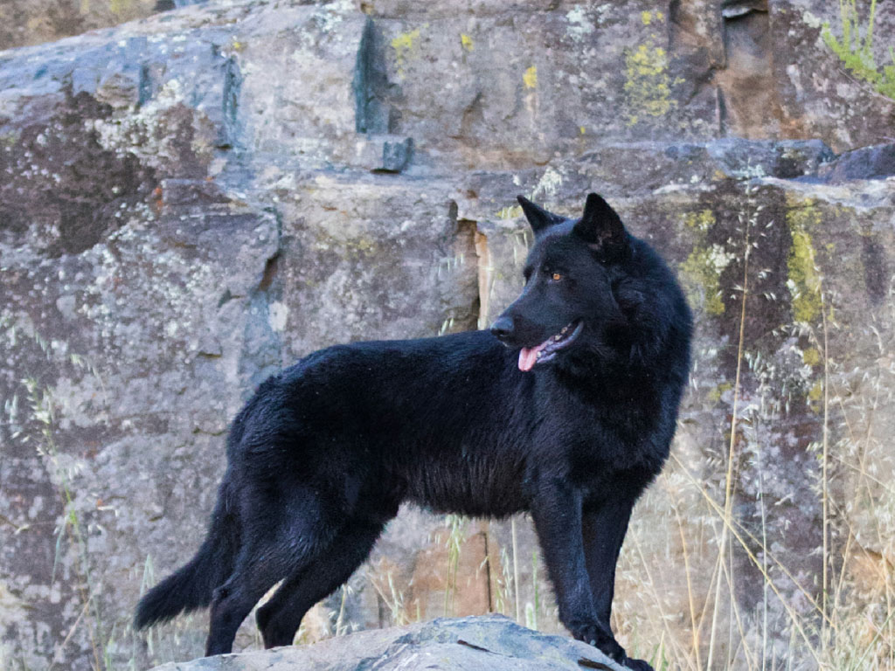
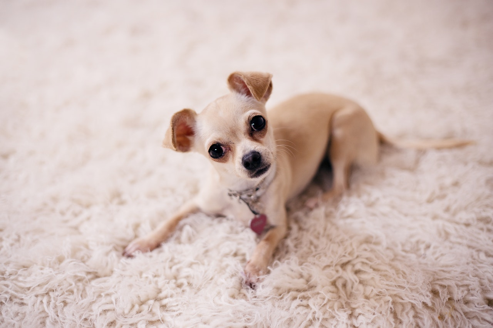

Miniaturas
-

Calupoh
Raza mexicana de aspecto elegante y presencia imponente. -

Xoloitzcuintle
Una de las razas más antiguas de México, famosa por su apariencia única. -

Chihuahua o chihuahueño
Raza pequeña, vivaz y muy conocida dentro y fuera de México.